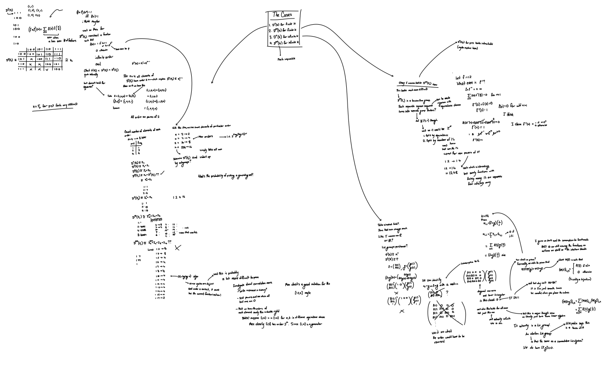

Convolution Canonicity: Dirichlet Convolutions!
\[ \gdef\Dir#1#2{\mathcal{D}^{#1} (#2)} \] Happy new year, everyone!
College application season is, for the most part, finally over, which fortunately means I'm now far more open to work on stuff like blogging and other passion projects (custom playlist software here I come rahhhh!). In the process of writing college apps, my mind of course found a way of sneaking math into everything, so I have tons of ideas to expand upon. I hope you look forward to a bunch of articles to come!
I plan for this article to be the first in a series of two, which I've affectionately named "Convolution Canonicity." Namely, the series shall feature:
- This article, which explores the group properties of a generalized form of Dirichlet convolution.
- A following article, which constructs convolutions in a more general manner, aided by the Haar measure and Fourier transforms. Consider this a first step into harmonic analysis.
In doing so, I hope to put a spotlight on the elegance of convolution and its apparent universality across different settings (hence the mention to canonicity).
I would also like to stress that this article is more "loose" than previous articles in a sense. While there is a central theme underlying our discussion, there is no one central problem we are trying to solve. This is more of an exploration, a journey through cool ideas found in Dirichlet convolution and, as a bonus, a concrete setting to learn more about group theory among other subjects. That being said, in the midst of conjuring tangentially related puzzles and ideas, I will try to keep a balance of some overarching structure as to not meander into oblivion.
That's about it for the introduction. It's time for some math!
A Primer and Brief Overview on Dirichlet Convolution
Dirichlet convolution is an operation birthed out of number theory. Like many forms of convolution, it's an operation between two functions that returns a new function according to some specific rules.
Definition. Specifically, for functions \(f, g : \mathbb{N} \to \mathbb{C}\), we can create a new function \(f * g\) called the Dirichlet convolution of \(f\) and \(g\) by the following rule: \[ (f * g)(n) := \sum_{d \mid n} f(d) g \left( \frac{n}{d} \right) .\]
Immediately, the connection to number theory is quite clear, especially so in its common first form (the leftmost sum). This is a sum taken over the divisors of \(n\), the index into the function. It may help to consider some examples.
Example (clarifying sum). Suppose I have functions \(f, g\) and I wish to find \((f * g)(6)\). This is precisely equal to \[ (f * g)(6) = f(1) g(6) + f(2) g(3) + f(3) g(2) + f(6) g(1) .\]
Example (applying the sum). For a more concrete function, denote by \(u\) the function that is identically \(1\) on all inputs. Clearly then, \[ (u * u)(n) = \sum_{d \mid n} u(d) u\left( \frac{n}{d} \right) = \sum_{d \mid n} 1 = d(n) ,\] where \(d(n)\) counts the number of divisors of \(n\).
Example (the identity). Another useful tool in the library of arithmetic functions is the identity function \(I(n)\), which is defined by \(I(1) = 1\) and \(I(n) = 0\) for \(n > 1\). We call this function the identity, as for any arithmetic function \(f\), its convolution with the identity is itself: \[ (f * I)(n) = \sum_{d \mid n} f(d) I \left( \frac{n}{d} \right) = f(n) ,\] since all terms but the one in which \(n / d = 1\) disappear. More succinctly, we say \(f * I = I * f = f\).
In number theory, the operation of Dirichlet convolution allows one to not only succinctly express identities between arithmetic functions, but also derive relations between them. To illustrate, consider the well-known identity \[ n = \sum_{d \mid n} \varphi(d) .\] If we define the function \(N(n) := n\) and use the previously defined function \(u\), Dirichlet convolution allows us to express the identity as \[ \varphi * u = N ,\] which is rather elegant. This also gives us another new identity, however. In the sphere of Dirichlet convolutions, we have inverses! Let's take the convolution on both sides by \(u^{-1}\): \[ \varphi * u * u^{-1} = \varphi * I = \varphi = N * u^{-1} .\] But what is \(u^{-1}\)? Well, with sufficient work, one can show that it is precisely the Möbius function \(\mu\)! Thus, \(\varphi = N * \mu\), or more explicitly, \[ \varphi(n) = \sum_{d \mid n} \mu(d) \cdot \frac{n}{d} .\] The curious readers will recognize this as a specific example of Möbius inversion.
Of course, in order to give a quick overview of the topic, I've been a bit loose in these statements. In order to multiply both sides by \(u^{-1}\) we had to assume that \(*\) is associative (i.e. \(f * g * h = (f * g) * h = f * (g * h)\)), and in switching around of the convolution, we had to assume that \(*\) is additionally commutative (i.e. \(f * g = g * f\)). Indeed, these are true in general; however, their proofs aren't particularly illuminating, and thus I have left them out.
Note: For those interested in the specific proofs and number theory side of Dirichlet convolutions, I'd recommend Apostol's Introduction to Analytic Number Theory, which provides a good overview of the tool quite early on in the book. The notation used here was chosen to align with that of the book.
Let's expand more on the inverses. Are inverses unique? When can a function be inverted? It turns out indeed that inverses are always unique, and a function \(f\) has a Dirichlet inverse \(f^{-1}\) if and only if \(f(1) \ne 0\), as we need to have \(1/f(1)\) exist. To verify this, one may set \(f * f^{-1} = I\) and find a recurrence for the values of \(f^{-1} (n)\).
Together, these properties may seem intriguing at best, but we can culminate them into a very powerful statement:
Dirichlet convolution forms an abelian (i.e. commutative) group over functions from \(\mathbb{N}\) to \(\mathbb{C}\).
This forms the basis of our exploration. A group-like structure immediately raises some interesting questions, both from a number-theoretic lens and a more pure perspective. Can we generalize this group? Can we classify these generalizations?
Since the article hasn't ended yet, you know what the answer is!
Generalizations and Classifications
Our first order of business will be to generalize this notion of Dirichlet convolution. What is the most general structure that allows for the construction of Dirichlet convolution? Intuitively, the complex numbers can't be the only codomain for the arithmetic functions that works. After all, the functions we've looked at don't even use the full space of complex numbers!
To motivate what we're looking for, let's write out the first few terms of a general Dirichlet convolution between two functions \(f, g\): \[\begin{align*} (f * g)(1) &= f(1) g(1), \\ (f * g)(2) &= f(1) g(2) + f(2) g(1), \\ (f * g)(3) &= f(1) g(3) + f(3) g(1), \\ (f * g)(4) &= f(1) g(4) + f(2) g(2) + f(4) g(1), \\ \end{align*}\] and so on. For the first term of the function, we only need multiplication, but for the rest of the terms we need both multiplication and addition. If we are to take inverses as well, we no doubt need subtraction and division too. This motivates some field theory!
Take some field \(K\) and consider a function \(f\) such that \(f(1) \in K^{\times}\) (the multiplicative subgroup of \(K\)) and \(f(n) \in K\) for \(n > 1\). This is precisely the generalization we are looking for. As \(f(1) \in K^{\times}\), \(f(1)\) must be invertible, which is equivalent to the function having an inverse. The introduction of a field allows for the rest of the function values to be added, subtracted, multiplied, and divided. Thus, our generalization of Dirichlet convolution depends on our choice of field.
But we can generalize even further! Instead of considering the function to have domain \(\mathbb{N}\), we can give it the "truncated" domain \(\{ 1, 2, \ldots, n \}\). Since all divisors of \(n\) are less than or equal to \(n\), this is perfectly valid.
Combining these two generalizing ideas, we can get a very formal looking definition:
Definition. Let \(K\) be a field. We define the generalized Dirichlet convolution group to be \(\Dir{n}{K} := (K^{\times} \times K^{n - 1}, *)\).
To handle the countably infinite case, we further define \(\Dir{\infty}{K} := (K^{\times} \times K^{\mathbb{N}}, *)\).
This does look a little daunting at first, but I'd like to remind the reader that at the very most this is just notation. We've already discussed the real intuition behind the construction, and it'll continue to become familiar as we move through some more specific cases.
Upon some thinking, we run into four main natural cases when trying to give specific values to \(K\) or \(n\). I shall rank them in a vague sense of their size/complexity, and this will be the order in which we'll explore them. We have:
- The case when \(K\) is finite and \(n\) is finite. Of course, since \(K\) is finite, it's isomorphic to a finite field of the form \(\mathbb{F}_{p^k}\). In other words, we're working over \(\Dir{n}{\mathbb{F}_{p^k}}\).
- The case when \(K\) is finite and \(n\) is infinite. This is similar to the previous case, but of course the domain is much bigger. This is \(\Dir{\infty}{\mathbb{F}_{p^k}}\).
- The case when \(K\) is infinite and \(n\) is finite. This case has some promising starts. Most infinite fields are practically subsets of \(\mathbb{C}\) (of course, matrix groups and elliptic curve groups and others exist, but hear me out), so we'll go ahead and call this \(\Dir{n}{\mathbb{C}}\).
- The case when \(K\) is infinite and \(n\) is infinite. This is the case we started with, with functions from \(\mathbb{N}\) to \(\mathbb{C}\), which we shall write as \(\Dir{\infty}{\mathbb{C}}\) now. In terms of classification, this seems practically impossible.
Since we have these natural cases so nicely laid out (good job, me), we might as well get to exploring!
Case \(\mathcal{D}^n (\mathbb{F}_2)\).
Just up above, I wrote that this case should be \(\Dir{n}{\mathbb{F}_{p^k}}\), so why are we only taking the case of \(\mathbb{F}_2\)? As it turns out, I can't say much in specifics for \(\mathbb{F}_{p^k}\)! In fact, I can tell you the order is \[ |\Dir{n}{\mathbb{F}_{p^k}}| = (p^k - 1) p^{(n - 1)k} ,\] but I can't tell you much else. As I hope to show below, even the behavior for \(\mathbb{F}_2\) is highly nontrivial, so I hope you can be satisfied with just this for now.
Let's first start by getting on the same page. As a review, \(\Dir{n}{\mathbb{F}_2}\) is the group of functions \(f\) with \(f(1) = 1\) (because there's only one element in \(\mathbb{F}_2^\times\)) and the other entries in \(f\) being akin to the integers modulo \(2\). You can even think of the functions as being tuples or vectors, if you'd prefer. There are precisely \(2^{n-1}\) of these functions in \(\Dir{n}{\mathbb{F}_2}\).
Getting a sense for the group requires a decent bit of playing around. Upon doing so, we see one of the characteristic identities that makes \(\mathbb{F}_2\) particularly well-behaved and special: something I've called the square lemma.
Lemma (the square lemma). Suppose \(f \in \Dir{n}{\mathbb{F}_2}\). We have that \((f * f)(n) = 1\) if and only if \(n = k^2\) and \(f(k) = 1\).
Proof. In the sum, we can pair together the terms \(f(d) f(n / d)\) and \(f(n / d) f(d)\) to get \(2f(d) f(n/d)\), which vanishes except for one case: when \(n\) is a perfect square and \(d^2 = n\). Thus, if \(n\) is not a square, \((f * f)(n) = 0\). Otherwise, \((f * f)(n) = f(d) f(d)\), which is \(1\) iff \(f(d) = 1\). \(\blacksquare\)
As a notational note, I will refer to \(f^n\) in the standard group theoretic manner to respect \(f^{n} = f^{n - 1} * f\). In other words, \(f^n\) represents \(f\) convolved with itself \(n\) times.
This is a rather limiting condition, and will give us a decent bit of control over repeated convolutions of elements. In particular, this allows us to classify the first few groups by hand:
- \(\Dir{1}{\mathbb{F}_2}\) has \(1\) element, meaning it's isomorphic to the trivial group.
- \(\Dir{2}{\mathbb{F}_2} \cong \mathbb{Z}_2\) necessarily because there are only \(2\) elements.
- \(\Dir{3}{\mathbb{F}_2} \cong V_4 \cong \mathbb{Z}_2 \times \mathbb{Z}_2\) as \((1, 0, 1), (1, 1, 0), (1, 0, 1)\) all square to the identity.
- \(\Dir{4}{\mathbb{F}_2} \cong \mathbb{Z}_2 \times \mathbb{Z}_4\), as most elements have order \(2\), but in particular functions \(f\) such that \(f(2) = 1\) have order \(4\). For example, there is the chain \((1, 1, 0, 0) \xrightarrow{f^2} (1, 0, 0, 1) \xrightarrow{f^4} (1, 0, 0, 0)\) utilizing the square lemma.
Of course, some of these properties are to be expected. Since \(|\Dir{n}{\mathbb{F}_2}| = 2^{n - 1}\), all elements have orders that are powers of \(2\). In addition, we can always see that \(\Dir{n}{\mathbb{F}_2}\) will be a direct product of cyclic factors in the above fashion due to the below very useful theorem:
Theorem (fundamental theorem on finite abelian groups). Every finite abelian group \(G\) can be written in the form \[ G \cong \mathbb{Z}_{p_1^{e_1}} \times \mathbb{Z}_{p_2^{e_2}} \times \cdots \times \mathbb{Z}_{p_k^{e_k}} ,\] for some \(p_1, p_2, \ldots, p_k\) and \(e_1, e_2, \ldots, e_k\) such that \(|G| = p_1^{e_1} p_2^{e_2} \cdots p_k^{e_k}\).
Yay for finite abelian groups!
Of course, we note for the reader that \(\mathbb{Z}_2 \times \mathbb{Z}_2 \not\cong \mathbb{Z}_4\), so this theorem does not give a unique factorization like we have for the naturals over the primes.
As seen with the concrete cases above, the general tools we have (cyclic product factorization and prime power group order) are useful, but cannot possibly give the entire picture. We must make an argument on more specific structure in the group itself.
I encourage the reader to play around with concrete cases themselves to gain an intuition of what is going on. As a hint for what our proof will need, though, consider iteratively applying the square operation like done for \(\Dir{4}{\mathbb{F}_2}\) and identifying the orders of elements based on this. I will say that the argument looks quite foreign without a little bit of thinking first.
Claim. I claim that the below algorithm gives the unique (up to rearrangement) factorization of \(\Dir{n}{\mathbb{F}_2}\) into cyclic groups of the form \(\mathbb{Z}_{2^k}\), including multiplicity.
python
This algorithm runs in roughly \(O(n \log \log n)\). The fact that there even exists an algorithm is rather cool, but it certainly does not seem obvious how it even connects to what we have said. Thus, let us show the connection.
Proof. Let \(\wp(n)\) denote the unique smallest integer \(q\) such that \(q^{2^m} = n\) for some \(m\). We may now define an equivalence relation \(\sim\) to be such that \(a \sim b \iff \wp(a) = \wp(b)\). We shall denote the partition of \(\{1, 2, \ldots n \}\) induced by \(\sim\) to be \(p_n\), where the sets are sorted. Denote by \([p_{n, k}]\) the smallest element in \(p_{n, k}\), which we shall think of as a representative. For example, \(\{1, 2, 3, 4\}\) partitions into \(p_{4,1} = \{1\}, p_{4, 2} = \{ 2, 4 \}, p_{4, 3} = \{ 3 \}\), and \([p_{4, 2}] = 2\).
Denote by \(\textsf{oats}(A)\) the function \(f \in \Dir{n}{\mathbb{F}_2}\) such that \(f(t) = 1\) if \(t \in A\) and \(f(t) = 0\). For \(k \ge 2\), we can associate \(p_{n,k}\) with a cyclic group generated by \(g_k := \textsf{oats}(\{ 1, [p_{n, k}] \})\). Call this cyclic group \(G_k\). One can verify that \(|G_k| = 2^{|p_{n, k}|}\) and \(G_{k} \le \Dir{n}{\mathbb{F}_2}\).
We wish to prove that \[ G_{2} \times G_{3} \times \cdots \times G_{k} \le \Dir{n}{\mathbb{F}_2} .\] It suffices to show that \(G_{i} \cap G_{j} = \{ I \}\) (where \(I\) is the identity). BWOC, suppose this was not the case. Then, WLOG, \(G_j \le G_i\) (where \(G_j\) nontrivial). However, take \(r\) to be a generator of \(G_j\) such that \(r = g_i^{2^m}\) for some \(m\) (always possible since \(G_i\) is cyclic and has the aforementioned pure prime order). But! The square lemma tells us \[ \{ t : g_i^{2^q}(t) = 1, t \ne 1, \text{ for any } q \} \subseteq p_{n, i} .\] But \(r\) has indices \(t\) where \(r(t) = 1\) and \(t \in p_{n, j}\), which is disjoint from \(p_{n, i}\), so we reach a contradiction.
Since each \(i\) for \(2 \le i \le n\) is included in exactly one of the partitions, one can verify that \(|G_2 \times G_3 \times \cdots \times G_k| = 2^{n - 1}\). Thus, \[ G_{2} \times G_{3} \times \cdots \times G_{k} \cong \mathbb{Z}_{2^{|p_{n, 2}|}} \times \mathbb{Z}_{2^{|p_{n, 3}|}} \times \cdots \times \mathbb{Z}_{2^{|p_{n, k}|}} \cong \Dir{n}{\mathbb{F}_2} .\] \(\blacksquare\)
In the future, I'd like to add an interactive simulation and some more intuition to this argument, but I think the best way to understand it fully is to just play around.
So, yeah! Even the case of \(K = \mathbb{F}_2\) is very much so nontrivial. I can't imagine what the general factorization looks like for other finite fields without having the square lemma at hand. Of course, I hope to explore small cases with more computer work, but I'll leave it here for now.
Case \(\mathcal{D}^\infty (\mathbb{F}_2)\).
We've now moved onto the infinite case. Unfortunately, things don't generalize quite as well. Using the square lemma once again, we can show that all elements of \(\Dir{\infty}{\mathbb{F}_2}\) except for the identity have infinite order, making this a torsion-free abelian group. Even with this, though, we can't say much; quite little is known about the classification of infinite abelian groups in the literature, even for a special case like ours. At the very least, this is what research has led me to believe. Perhaps in the future I'll revisit this case with more knowledge, but most of the theory we've built up in the previous case unfortunately fails to work here.
To blatantly cherry-pick a quote from Wikipedia, "it has been proven that the classification problem for countable torsion-free abelian groups is as hard as possible."
Well would you look at that.
Case \(\mathcal{D}^n (\mathbb{C})\).
Unlike the previous case, we can actually make some marginal progress here. The key idea in this case is to view Dirichlet convolution by a specific function as a matrix action (thus associating each element with a matrix) on a vector.
To be specific, for any \(f \in \Dir{n}{\mathbb{C}}\), we may create a unique associated matrix \(\varphi(f)\) such that \[ (\varphi(f))_{n, k} = \begin{cases} f \left( \frac{n}{k} \right) & \text{if } k \mid n, \\ 0 & \text{otherwise} \end{cases} \]
Example. For a specific case, consider \(f(n) = n\). This yields the matrix \[ \varphi(f) = \begin{bmatrix} 1 & 0 & 0 & 0 \\ 2 & 1 & 0 & 0 \\ 3 & 0 & 1 & 0 \\ 4 & 2 & 0 & 1 \end{bmatrix} .\]
Notice how, by the diagonal, the matrix is invertible iff \(f(1)\) is invertible! This checks out well with how we think about the Dirichlet convolution functions.
We shall denote by \(\mathcal{M}_n \subset M_{n \times n}(\mathbb{C})\) the set of matrices \(\{ \varphi(f) : f \in \Dir{n}{\mathbb{C}} \}\). Since we have a bijection between our functions and this set, we have a very enticing claim that they are isomorphic:
Claim. \((\mathcal{M}_n, \cdot)\) forms a group isomorphic to \(\Dir{n}{\mathbb{C}}\).
Proof. Since we already know \(\varphi\) is bijective, it suffices to show that \(\varphi\) is a group homomorphism. That is, we must show that \[ \varphi(f) \varphi(g) = \varphi(f * g) ,\] where \(*\) is, of course, Dirichlet convolution. To do so, observe that \[ (\varphi(f) \varphi(g))_{i, j} = \sum_{k = 1}^{n} (\varphi(f))_{i, k} (\varphi(g))_{k, j} .\] By consequence of the right hand side, \((\varphi(f) \varphi(g))_{i, j} = 0\) if \(j \nmid i\). Assuming otherwise, we can reduce the expression to \[ (\varphi(f) \varphi(g))_{i, j} = \sum_{k \mid i} f \left( \frac{i}{k} \right) g \left( \frac{k}{j} \right) = (f * g) \left( \frac{i}{j} \right) .\] Matching this to our definition of \(\varphi\), we nicely see that this proves our claim. \(\blacksquare\)
We care about matrices like these because they are very nice to play around with, and, helpfully, there is much known about these matrix groups. Observe that \(\mathcal{M}_n\) is a subgroup of the \(n \times n\) complex lower triangular matrix group. By Cartan's theorem, the triangular matrix group being a Lie group implies that \(\mathcal{M}_n\) is a Lie group! Thus, \(\Dir{n}{\mathbb{C}}\) is isomorphic to an \(n\)-dimensional Lie group!
Case \(\mathcal{D}^\infty (\mathbb{C})\).
Similarly to the second case, this case fails to mesh well with the previous theory that we've built up. I suppose the most pertinent thing to research into would be infinite-dimensional abelian Lie groups, but not much is returned, which seems rather reasonable. For what it's worth, this has been a very brief yet still interesting encounter with Lie groups, and I hope to learn more about them in the future.
Moving on!
Afterthoughts and More to Come
I will make the conclusion short for the sake of time and my tireful fingers.
I quite liked this exploration! I feel like it's been quite a while since I've worked on a crazy random math problem like this; it's been a while since I've gotten off the path of textbooks and the pure math curriculum and tried something for my own entertainment. I hope the reader also got some of the same enjoyment out of this article, and pertinently, I hope to have conveyed some sense of exploration to you. Alas, the power of words is limited, and the power of my words even more so. I do think the linear structure of this article doesn't do the process and feeling of discovery I felt justice.
Thus, here's how my work actually looked in the PDF app I use on my phone. Quite fun!

To actually conclude, I'll leave off with an analogy I like very much from the internet. While it was originally referencing remote code execution (RE), I feel that the same sort of style applies to challenging a hard math problem like this:
"RE is like a game of minesweeper. You start with an empty field not knowing the state of any of the cells, i.e. not knowing whether each individual cell contains a landmine or not. When you discover the state of a cell, you have the context to deduce the state of its neighbor cells. In minesweeper, you don't have a particular direction in which you progress. You never say 'In this game of minesweeper, I want to go up no matter what', you just let the numbers nudge you in the direction that is the easiest to go in at the moment. I assert that this is also true for RE. Once you find out what a function or a variable does, you suddenly understand a little more about functions and variables that depend on the ones whose meaning you've just inferred. It may be beneficial not to set any particular goal with an RE project, and instead letting the complex network of intertwined functions and variables guide you towards understanding the system as a whole."
Thank you for reading, and...
Happy January!! See you again soon >:)